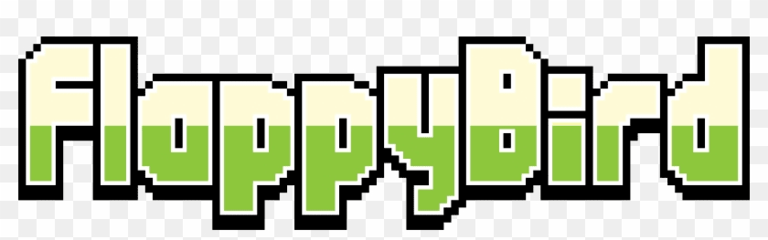
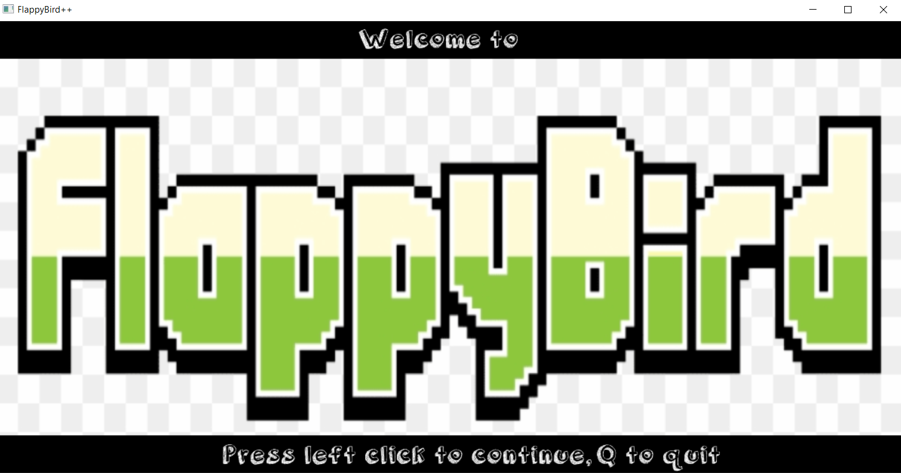
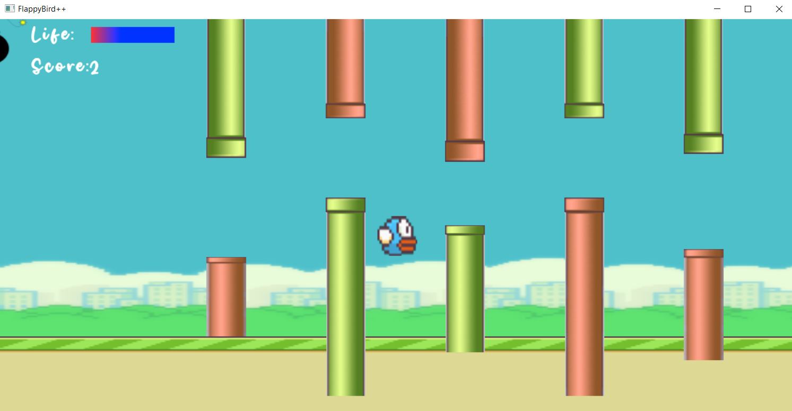
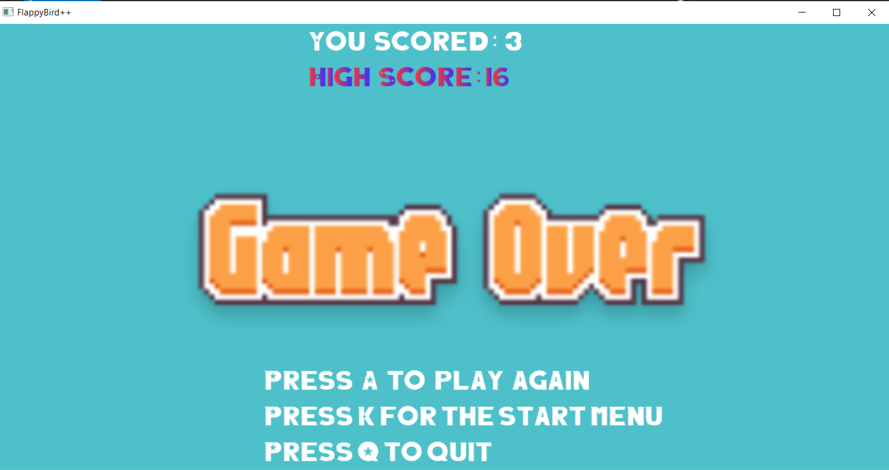
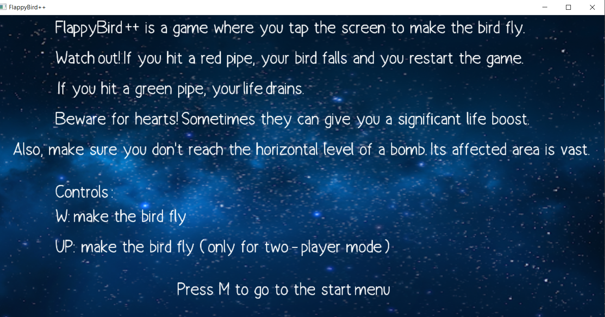
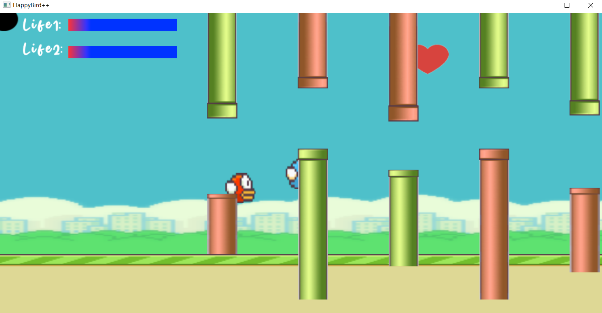
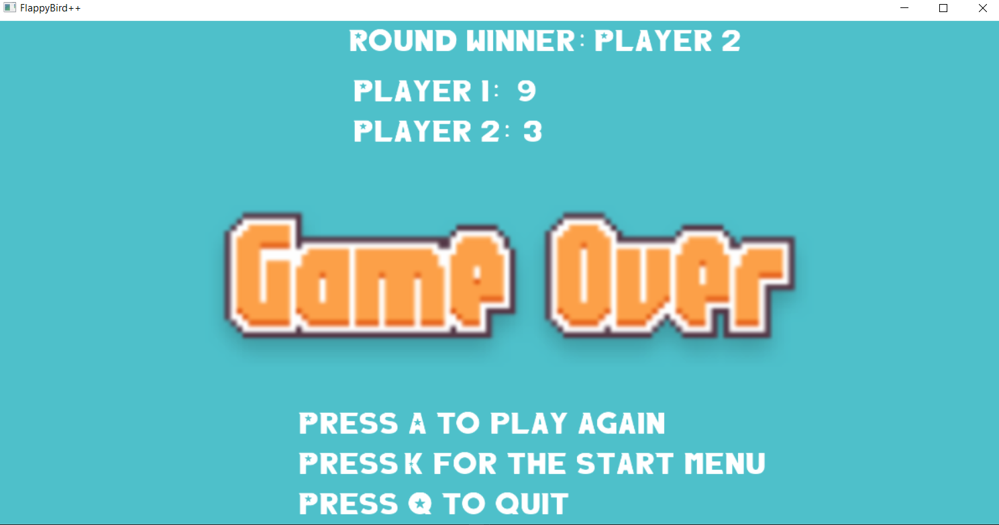

Γενικά
Ο ελεύθερος χρόνος, όπως ορίζεται στο βικιλεξικό :
"ο προσωπικός μας χρόνος εκτός εργασίας, ο οποίος συνήθως αφιερώνεται σε ευχάριστες ασχολίες".
Ο ελεύθερος χρόνος είναι από τα σημαντικότερα πράγματα στην γρήγορη και απαιτητική καθημερινότητά μας.
Μας ξεκουράζει και μας δίνει τη δυνατότητα να αποδωθούμε σε δημιουργικές δραστηριότητες.Μέσα στον ελάχιστο ελεύθερο χρόνο που έχουμε στη διάθεση μας πρέπει
να
χωρέσουν όλα όσα είναι ζωτικής ανάγκης : η ανεµελιά, η ξεκούραση, η παρέα, η ψυχαγωγία και (γιατί όχι) η περισυλλογή και η ονειροπόληση.
Οι αγαπημένες μου ασχολίες, με φθίνουσα σειρά προτίμησης:
- Περπάτημα σε εξωτερικό χώρο
- Video games, συγκεκριμένα το Rocket League .
- Μουσική
- Software development
- Ανάγνωση βιβλίων
- Κολύμβηση (τα καλοκαίρια)
1. Περπάτημα σε εξωτερικό χώρο. Όποτε έχω τη δυνατότητα, προσπαθώ να το κάνω. Παρότι γενικά είμαι περισσότερο άνθρωπος του 'μέσα', φροντίζω πάντα να ξεκλέβω
λίγο χρόνο για να περπατήσω έξω. Είναι ο προσωπικά αγαπημένος μου τρόπος άσκησης, είτε βρίσκομαι στο Ναύπλιο είτε στην Αθήνα. Η πιο χαρακτηριστική μου εξόρμηση ήταν
ο περίπατος από την περιοχή του Αλίμου μέχρι το κέντρο της Αθήνας (Σύνταγμα).
2. Rocket League . Σχεδόν καθημερινά αφιερώνω κάποιο χρόνο για να παίξω το αγαπημένο μου παιχνίδι. Για να πάρετε μια ιδέα , μπορείτε να το πείτε και ως 'ποδόσφαιρο των αυτοκινήτων'.
3. Μουσική . Δεν υπάρχει μέρα στη καθημερινότητα μου που να μην ακούσω έστω μισή ώρα μουσική , και αυτό συμβαίνει κυρίως τα βράδια. Ένας απόλυτος τρόπος χαλάρωσης και ηρεμίας.
4. Software Development . Από τις πιο δημιουργικές δραστηριότητες που μπορεί να κάνει κανείς. Πέρα από τα projects στη σχολή, πάντα εάν έχω παραπάνω χρόνο, φιλοδοξώ να διαθέσω για να φτιάξω κάτι χρήσιμο.
5. Ανάγνωση βιβλίων . Το διάβασμα είναι για το πνεύμα ό,τι η άσκηση για το σώμα. Στόχος μου είναι κάθε χρόνο να διαβάζω τουλάχιστον 3-4 λογοτεχνικά βιβλία.
6. Κολύμβηση . Από μικρός μου αρέσει ιδιαίτερα το κολύμπι στην θάλασσα, αποτελεί μαζί με το περπάτημα τους δύο καλύτερους τρόπους άσκησης. Στοχεύω κάθε καλοκαίρι να κάνω ~50 μπάνια στη θάλασσα.

Ένα ενδιαφέρoν προγραμματιστικό project: FlappyBird ++
Παρ'ότι δεν είναι ακριβώς 'μέρος του ελεύθερου μου χρόνου', το παραθέτω εδώ καθώς είναι μια ενδιαφέρουσα ασχολία μου.
Στο μάθημα 'Προγραμματισμός Υπολογιστών με C++' , κληθήκαμε στα πλαίσια μιας εργασίας να υλοποιήσουμε ένα arcade παιχνίδι της επιλογής μας.
Εγώ επέλεξα το FlappyBird , και υλοποίησα μια παραλλαγή του, με όνομα FlappyBird++.
Για την παρασκευή του παιχνιδιού, χρησιμοποίησα μια έτοιμη βιβλιοθήκη που μας παρεχόταν από τον καθηγητή, την Simple Game Graphics Library ( SGG ).
Ουσιαστικά το μεγαλύτερο challenge κατ' εμέ στην υλοποίηση ήταν οι συγκρούσεις στα εμπόδια (pipes), στα οποία εάν έπεφτε ο παίχτης έπρεπε είτε να πεθαίνει αμέσως είτε να χάνει ζωή.
Αυτό έγινε με τη χρήση μιας ακτινών επιρροής, τόσο από την πλευρά του παίχτη, όσο και από την πλευρά των εμποδίων. Πολλές ώρες ενασχόλησης, ωστόσο με αντάμειψαν στο τέλος :)
Πάρτε μια γεύση από το παιχνίδι:





